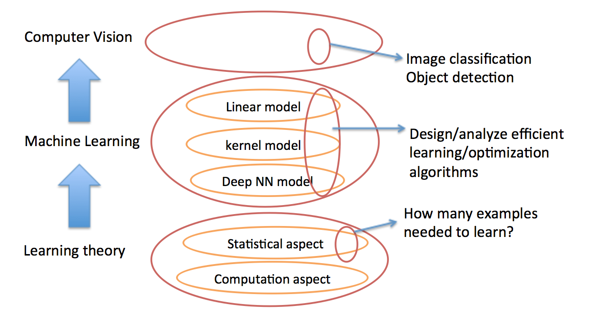

|
Zhe Li
|
|
Highlights:
Seasoned industry and academic expert with extensive experiences in developing large-scale, user-centric deep learning features on-device and strong publications.
Shipped the Face ID with mask feature, led the development of the face recognition system, and contributed to the implementation of spoof prevention and attention awareness feature.
Bridged the gap among learning algorithms (classification, detection, prediction, and others), feature specs (hand gesture, Persona, and others), hardware (GPU, ANE, sensors) capacities for Apple Vision Pro.
|
About me
I was a staff machine learning and computer vision engineer at Apple, where my role was to bridge the gap between learning algorithms (classification, detection and others), features specs (hand gestures, Persona, Optic ID, others), hardware capacities (ANE, camera, ISP, SOC), and software implementation for Apple Vision Pro Product. Prior to this position, I was at the Face ID team, where I led the development of the first-generation face recognition for Face ID unlock with mask and the second-generation face recognition for Face ID in iPhone 13 and later version at Apple. I obtained my PhD from The University of Iowa in 2018, supervised by Prof. Tianbao Yang. My research focuses on optimizing deep neural networks from speeding up training, improving generalization ability, reducing model size and searching optimal network structure, and its application to computer vision and language tasks. I received my bachelor's degree and master's degree both in computer science from Xian Jiaotong University and South Dakota State University in 2010 and 2013, respectively. In case that you need to reach out me, my email is zhelixjtu/ [@] gmail [DOT] com.
News
I will give a guest lecture on automatically searching the optimal neural network structures in deep learning course at The University of Iowa.
We gave a presentation on our oral AISTATS 2018 paper.
I gave a guest lecture on compressing deep neural networks in deep learning course at The University of Iowa.
Research Interest
|
 |
My research interests fall into three levels (as shown in the left figure):
understanding why machine can learn from learning theory perspective (statistical machine learning);
designing and analyzing optimization algorithms to facilitate machine learning efficiently;
utilizing machine learning models(Specifically, deep neural network) to solve image classification, object detection or other computer vision task.
|
Research Experience
Sep 2022 - Present, Staff Machine Learning Engineer at Apple Inc. at Cupertino CA
Sep 2020 - Sep 2022, Senior Machine Learning Engineer at Apple Inc. at Cupertino CA
Aug 2018 - Sep 2020, Machine Learning Engineer at Apple Inc. at Cupertino CA
Aug 2014 - May 2018, Research Assistant at The University of Iowa at Iowa City, IA
May 2017 - Nov 2017, Research Intern at Snap Research at Venice, CA
May 2016 - Aug 2016, Research Intern at Yahoo Research at Sunnyvale, CA
May 2015 - Aug 2015, Research Intern at General Motor Research at Warren, MI
Aug 2011 - Jul 2013, Research Assistant at South Dakota State University at Brookings, SD
Aug 2010 - Jun 2011, Research Assistant at Xi'an Jiaotong University at Xi'an, Shaanxi
Recent Publications
Zhe Li, Tianbao Yang, Lijun Zhang, Rong Jin, "Fast and Accurate Refined Nystrom based Kervel SVM", AAAI 2016.
[pdf][Bibtex][poster][slides]
Workshop
Zhe Li, Xiaoyu Wang, Xutao Lv, Tianbao Yang, "SEP-Nets: Small and Effective Pattern Networks".
Beyond ISLVRC workshops 2017 Honululu, HI
Zhe Li, Tianbao Yang, Lijun Zhang, Rong Jin, "A Two-stage Approach for Learning a Sparse Model with Sharp Excess Risk Analysis"
Learning Fast From Easy Data Workshop NIPS 2015, Montreal, Canada
Talks
“Deep Learning With Caffe”[pdf], The University of Iowa, Apr 2017
This lecture tried to teach students widely from The university of Iowa how to install caffe in the university cluster argon and how to train the very first deep neural network model for image classification using caffe. The installation in Argon clusteris quite tricky since students don't have root access to cluster. See Notes for detail information if you want to install caffe in your cluster environment.
Demo
Notes
The following are some casual notes:
Honors and Awards
Professional Activities
Program Committee of The Twelfth Asia Information Retrieval Societies(AIRS) Conference 2016
Reviewer of The Thirtieth Annual Conference on Neural Information Processing Systems (NIPS) 2016
Reviewer of The Thirtieth AAAI Conference on Artificial Intelligence (AAAI) 2016
Reviewer of The 25th ACM International Conference on Information and Knowledge Management (CIKM) 2016
Reviewer of ACM Research in Applied Computation Symposium (RACS), 2012
Reviewer of The 13^th IEEE international Conference on Communication Systems 2012
Reviewer of International Conference on Wireless Communications and Signal Processing (WCSP), 2012
Reviewer of the 8^th IEEE International Conference on Wireless and Mobile Computing, Networking, and Communications(WiMob), 2012
|